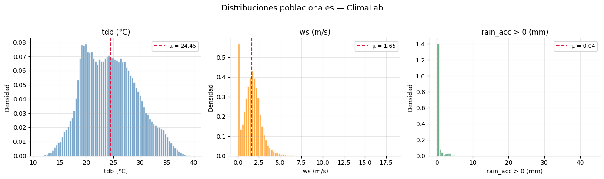
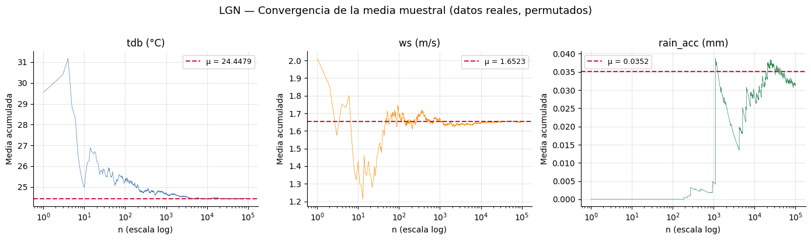

import numpy as np
import pandas as pd
import matplotlib.pyplot as plt
from scipy import stats
plt.rcParams.update(
{
"figure.facecolor": "white",
"axes.facecolor": "white",
"axes.grid": True,
"grid.alpha": 0.3,
"axes.spines.top": False,
"axes.spines.right": False,
}
)
rng = np.random.default_rng(42)
import ipywidgets as widgets
from ipywidgets import interact, interactive_output
from IPython.display import display, Markdown9 Semana 4B — Muestreo y Estimación (Laboratorio)
Objetivo: Verificar la Ley de Grandes Números y el Teorema del Límite Central usando datos reales de la estación meteorológica ClimaLab.
La gran ventaja de tener el dataset completo (~1.08 M registros a 1 minuto) es que podemos tratarlo como la población y conocer \(\mu\) y \(\sigma\) exactos, algo que en la práctica casi nunca es posible.
9.1 1. Cargar y conocer la población
df = pd.read_parquet("../data/ClimaLab_2023-05-31_2025-06-20.parquet")display(Markdown(f"""
**Registros:** {len(df):,}  
**Período:** {df.index.min()} → {df.index.max()}  
**Variables:** {', '.join(f'`{c}`' for c in df.columns)}
"""))Registros: 1,076,768 Período: 2023-05-31 18:59:00 → 2025-06-20 00:00:00 Variables: dhi, dni, ghi, p_atm, rain_acc, rh, solar_altitude, tdb, uv, wd, ws
tdb = df["tdb"].dropna().values
mu_tdb = tdb.mean()
sigma_tdb = tdb.std()
ws = df["ws"].dropna().values
mu_ws = ws.mean()
sigma_ws = ws.std()
rain = df["rain_acc"].dropna().values
mu_rain = rain.mean()
sigma_rain = rain.std()
poblacion_stats = {
"tdb": {"datos": tdb, "mu": mu_tdb, "sigma": sigma_tdb, "n": len(tdb)},
"ws": {"datos": ws, "mu": mu_ws, "sigma": sigma_ws, "n": len(ws)},
"rain_acc": {"datos": rain, "mu": mu_rain, "sigma": sigma_rain, "n": len(rain)},
}_rows = ""
for var, s in poblacion_stats.items():
_rows += (
f"| `{var}` | {s['n']:,} | {s['mu']:.4f} | {s['sigma']:.4f} |\n"
)
display(Markdown(f"""
### Parámetros poblacionales
| Variable | N | μ | σ |
|:---|---:|---:|---:|
{_rows}
Estos valores son nuestro **ground truth**: al tomar muestras,
los estadísticos muestrales deben converger hacia ellos.
"""))9.1.1 Parámetros poblacionales
| Variable | N | μ | σ |
|---|---|---|---|
tdb |
1,076,768 | 24.4479 | 4.9352 |
ws |
1,076,768 | 1.6523 | 1.1078 |
rain_acc |
1,076,768 | 0.0352 | 0.9237 |
Estos valores son nuestro ground truth: al tomar muestras, los estadísticos muestrales deben converger hacia ellos.
fig1, axes1 = plt.subplots(1, 3, figsize=(14, 4))
_configs = [
(tdb, mu_tdb, "tdb (°C)", "steelblue"),
(ws, mu_ws, "ws (m/s)", "darkorange"),
(rain[rain > 0], mu_rain, "rain_acc > 0 (mm)", "seagreen"),
]
for ax, (datos, mu, nombre, color) in zip(axes1, _configs):
ax.hist(datos, bins=80, density=True, color=color,
alpha=0.7, edgecolor="white")
ax.axvline(mu, color="crimson", ls="--", lw=1.5,
label=f"μ = {mu:.2f}")
ax.set_xlabel(nombre)
ax.set_ylabel("Densidad")
ax.set_title(nombre)
ax.legend(fontsize=9)
plt.suptitle("Distribuciones poblacionales — ClimaLab", fontsize=13, y=1.02)
plt.tight_layout()
plt.show()
Nota:
tdbtiene una distribución bimodal (mezcla verano/invierno),wses asimétrica con cola derecha, yrain_acces extremadamente asimétrica (la mayoría de los registros son 0). Tres distribuciones muy distintas — ideal para probar la LGN y el TLC.
9.2 2. Ley de Grandes Números con datos reales
Tomamos observaciones consecutivas de cada variable y graficamos la media acumulada. Conforme \(n\) crece, debe converger a \(\mu\).
_max_n = min(100_000, len(tdb))
fig2, axes2 = plt.subplots(1, 3, figsize=(14, 4))
_ns = np.arange(1, _max_n + 1)
_configs_lgn = [
(tdb, mu_tdb, "tdb (°C)", "steelblue"),
(ws, mu_ws, "ws (m/s)", "darkorange"),
(rain, mu_rain, "rain_acc (mm)", "seagreen"),
]
for ax, (datos, mu, nombre, color) in zip(axes2, _configs_lgn):
# Permutar para romper la correlación temporal
_shuffled = rng.permutation(datos)[:_max_n]
_media_acum = np.cumsum(_shuffled) / _ns
ax.plot(_ns, _media_acum, color=color, lw=0.5)
ax.axhline(mu, color="crimson", ls="--", lw=1.5,
label=f"μ = {mu:.4f}")
ax.set_xscale("log")
ax.set_xlabel("n (escala log)")
ax.set_ylabel("Media acumulada")
ax.set_title(nombre)
ax.legend(fontsize=9)
plt.suptitle(
"LGN — Convergencia de la media muestral (datos reales, permutados)",
fontsize=13, y=1.02,
)
plt.tight_layout()
plt.show()
Observaciones: - Las tres variables convergen a \(\mu\), a pesar de tener distribuciones completamente distintas. -
rain_accconverge más lento porque su varianza relativa es enorme (casi todos los valores son 0, con picos ocasionales). - Permutamos los datos antes de acumular para simular un muestreo aleatorio (los datos originales tienen autocorrelación temporal).
9.3 3. Teorema del Límite Central con datos reales
Para cada tamaño de muestra \(n\), extraemos 1,000 muestras aleatorias, calculamos la media de cada una, y graficamos la distribución resultante.
Según el TLC, esta distribución debe aproximarse a \(N(\mu,\;\sigma^2/n)\), sin importar la forma de la distribución original.
9.3.1 Elige la variable para explorar el TLC
var_dropdown = widgets.Dropdown(options=["tdb", "ws", "rain_acc"], value="tdb", description="Variable")
def _update(var_dropdown):
_var = var_dropdown
_info = poblacion_stats[_var]
_datos = _info["datos"]
_mu = _info["mu"]
_sigma = _info["sigma"]
_tamaños = [5, 30, 100, 500]
_num_replicas = 1000
fig3, axes3 = plt.subplots(2, 2, figsize=(11, 8))
for ax, n_val in zip(axes3.flat, _tamaños):
_medias = np.array(
[rng.choice(_datos, size=n_val, replace=False).mean()
for _ in range(_num_replicas)]
)
ax.hist(_medias, bins=40, density=True, color="steelblue",
alpha=0.7, edgecolor="white", label="Empírica")
# Curva normal teórica
_de = _sigma / np.sqrt(n_val)
_x = np.linspace(_medias.min(), _medias.max(), 200)
_pdf = (
1
/ (_de * np.sqrt(2 * np.pi))
* np.exp(-0.5 * ((_x - _mu) / _de) ** 2)
)
ax.plot(_x, _pdf, "crimson", lw=2, label="$N(\\mu, \\sigma^2/n)$")
ax.set_title(f"n = {n_val}")
ax.set_xlabel("$\\bar{x}$")
ax.set_ylabel("Densidad")
ax.legend(fontsize=8)
plt.suptitle(
f"TLC — Variable: {_var} (μ = {_mu:.3f}, σ = {_sigma:.3f})",
fontsize=13,
)
plt.tight_layout()
plt.show()
out = widgets.interactive_output(_update, {'var_dropdown': var_dropdown})
display(widgets.VBox([var_dropdown, out]))Prueba con las tres variables. Observa que: -
tdb(bimodal) se normaliza rápido porque cada “modo” ya es simétrico. Con \(n = 30\) el ajuste es excelente. -ws(asimétrica) necesita un poco más de \(n\) para que las colas se simetrizen. -rain_acc(cero-inflada) es el caso más extremo: con \(n = 5\) la distribución de medias sigue siendo asimétrica; con \(n = 500\) finalmente se ajusta a la normal.
9.4 4. Verificación numérica
Comparamos los valores teóricos (\(\mu\) y \(\sigma/\sqrt{n}\)) con los valores empíricos obtenidos de las 1,000 muestras.
_tamaños = [5, 30, 100, 500]
_num_replicas = 1000
_rows = ""
for var_name, info in poblacion_stats.items():
datos = info["datos"]
mu = info["mu"]
sigma = info["sigma"]
for n_val in _tamaños:
medias = np.array(
[rng.choice(datos, size=n_val, replace=False).mean()
for _ in range(_num_replicas)]
)
de_teorica = sigma / np.sqrt(n_val)
de_empirica = medias.std()
media_emp = medias.mean()
_rows += (
f"| `{var_name}` | {n_val} | {mu:.4f} | {media_emp:.4f} "
f"| {de_teorica:.4f} | {de_empirica:.4f} |\n"
)
display(Markdown(f"""
| Variable | n | μ (población) | $\\bar{{x}}$ medio (empírico) | DE teórica ($\\sigma/\\sqrt{{n}}$) | DE empírica |
|:---|---:|---:|---:|---:|---:|
{_rows}
> Los valores empíricos coinciden con los teóricos, confirmando
> que el TLC funciona incluso para distribuciones muy alejadas
> de la normal.
"""))9.5 5. Nota sobre la autocorrelación temporal
En los ejercicios anteriores permutamos los datos para simular muestreo aleatorio. Pero los datos meteorológicos no son independientes: la temperatura de un minuto está correlacionada con la del minuto anterior.
¿Qué pasa si tomamos medias de bloques consecutivos en vez de muestras aleatorias?
_n = 30
_num_replicas = 1000
# Muestreo aleatorio (i.i.d.)
_medias_iid = np.array(
[rng.choice(tdb, size=_n, replace=False).mean()
for _ in range(_num_replicas)]
)
# Bloques consecutivos
_max_start = len(tdb) - _n
_starts = rng.integers(0, _max_start, _num_replicas)
_medias_bloque = np.array(
[tdb[s : s + _n].mean() for s in _starts]
)
_de_teorica = sigma_tdb / np.sqrt(_n)
fig5, (ax5a, ax5b) = plt.subplots(1, 2, figsize=(12, 4), sharey=True)
ax5a.hist(_medias_iid, bins=40, density=True, color="steelblue",
alpha=0.7, edgecolor="white")
ax5a.set_title(f"Muestreo aleatorio (DE = {_medias_iid.std():.3f})")
ax5a.set_xlabel("$\\bar{x}$")
ax5a.set_ylabel("Densidad")
ax5b.hist(_medias_bloque, bins=40, density=True, color="darkorange",
alpha=0.7, edgecolor="white")
ax5b.set_title(f"Bloques consecutivos (DE = {_medias_bloque.std():.3f})")
ax5b.set_xlabel("$\\bar{x}$")
# Normal teórica (solo aplica al i.i.d.)
_x = np.linspace(
min(_medias_iid.min(), _medias_bloque.min()),
max(_medias_iid.max(), _medias_bloque.max()),
200,
)
_pdf = (
1
/ (_de_teorica * np.sqrt(2 * np.pi))
* np.exp(-0.5 * ((_x - mu_tdb) / _de_teorica) ** 2)
)
ax5a.plot(_x, _pdf, "crimson", lw=2, label=f"$N(\\mu, \\sigma^2/n)$")
ax5b.plot(_x, _pdf, "crimson", lw=2, ls="--", alpha=0.5,
label="Normal teórica (i.i.d.)")
ax5a.legend(fontsize=9)
ax5b.legend(fontsize=9)
plt.suptitle(
f"Efecto de la autocorrelación en la distribución de $\\bar{{x}}$ "
f"(n = {_n}, tdb)",
fontsize=13, y=1.02,
)
plt.tight_layout()
plt.show()Conclusión importante: - Con muestreo aleatorio, la dispersión de \(\bar{x}\) coincide con \(\sigma/\sqrt{n}\) — el TLC funciona. - Con bloques consecutivos de 30 minutos, la dispersión es mucho mayor que \(\sigma/\sqrt{n}\), porque las observaciones dentro de cada bloque son muy parecidas entre sí (autocorrelación). 30 minutos consecutivos no equivalen a 30 observaciones independientes.
Este es un adelanto de por qué necesitaremos herramientas de series temporales (bloque 3) para analizar correctamente datos con dependencia temporal.
9.6 Resumen de la sesión
| Verificación | Resultado con ClimaLab |
|---|---|
| LGN | Las tres variables (tdb, ws, rain_acc) convergen a \(\mu\) — rain_acc más lento por su alta varianza relativa |
| TLC | La distribución de \(\bar{x}\) se ajusta a \(N(\mu, \sigma^2/n)\) incluso para rain_acc (cero-inflada), siempre que \(n\) sea suficientemente grande |
| Autocorrelación | Bloques consecutivos violan la independencia → la dispersión real de \(\bar{x}\) es mayor que la teórica. El TLC requiere muestras independientes |
Próxima semana (5): Usar estos resultados para construir intervalos de confianza y medir la incertidumbre de nuestras estimaciones.